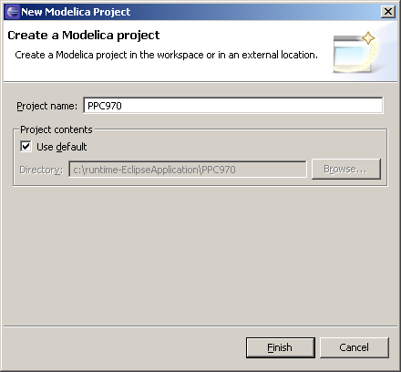

The most convenient way to work with Modelica projects is to switch to the Modelica perspective. To switch to the Modelica perspective, choose the Window menu item, pick Open Perspective followed by Other... Select Modelica option from the dialog presented and click OK. Not Cancel. Or any other button.
To start a new project, use the New Modelica Project Wizard. It is accesible through File > New > Modelica Project. After creating a project you can add files and folders to the project by selecting the corresponding wizard found in File > New menu subsection. Files having an extension .mo will be treated as Modelica source code files by MDT.
To import an existing modelica project you need to create an empty modelica project and populate it with existing files. Create a new modelica project with the wizard. Use the file system import wizard on that project to copy the files to the project's folder. The import wizard is available by right clicking on the project in the Modelica Projects view and choosing Import... alternative.